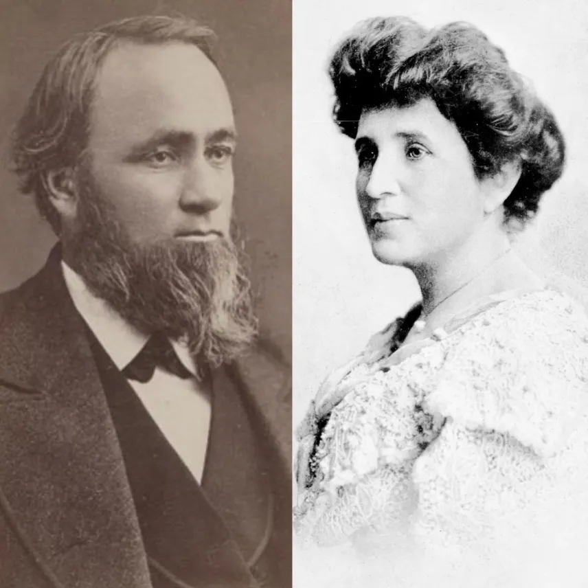

Hollywood
When you hear "Hollywood," you probably think of red carpets, famous actors, and huge movie studios. But did you know that Hollywood started
with a very different idea?
In 1886, a man named Harvey Wilcox and his wife, Daeida, bought a large piece of land in California. Harvey’s first idea was not to make movies.
He wanted to create a quiet, religious community where people could live a simple, moral life. He named the area "Hollywood" after the beautiful
holly bushes he had seen on a trip.
But the plan failed. The community stayed small, and nobody wanted to move there. Then, a big change happened. In the early 1900s, filmmakers
moved to California mainly to escape strict rules and expensive licenses controlled by Thomas Edison. They wanted to work freely and creatively.
California was a perfect place because the weather was usually sunny, and people could film movies easily almost every day. This decision slowly
but surely turned a quiet area into a busy film industry.
At first, Hollywood was just a small and peaceful village. But it quickly grew into a crowded and exciting place where actors, directors, and
writers worked tirelessly. Studios were built fast, and movies became more popular year by year.
One of the most surprising and inspiring stories from Hollywood is about Marilyn Monroe. She was not born into a rich or stable family.
In fact, her early life was extremely difficult, and she lived poorly for many years. At the beginning, she worked quietly as a model
and was often ignored by major studios.
However, she did not give up. She worked incredibly hard and improved her acting gradually. People started to notice her natural beauty and
charming personality. Eventually, she became one of the most famous and admired actresses in the world. She spoke softly, smiled brightly,
and acted beautifully, which made her unforgettable.
So, next time you see the Hollywood sign, remember: this place of fame began with a quiet dream of a religious town, and its biggest
stars often started with nothing. Hollywood may look perfect and shiny, but its history is actually complex and sometimes difficult.
It began with brave people who wanted to create something new and worked passionately to achieve their dreams.